器材库 > APS及其以下画幅可换镜头数码相机 > EOS M6
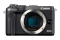
规格总览
产品类型
APS画幅可换镜头数码相机
发布日期
2017-02-15
影像规格
影像传感器
CMOS
影像传感器尺寸
22.3×14.9mm
总像素
2580万
有效像素
2420万
影像处理器
DIGIC 7
静态图像格式
JPEG, RAW, RAW+JPEG
静态图像质量
L（大）：约2400万像素（6000×4000） M（中）：约1060万像素（3984×2656） S1（小1）：约590万像素（2976×1984） S2（小2）：约380万像素（2400×1600） RAW：约2400万像素（6000×4000）
短片格式
MPEG4-AVC/H.264
短片尺寸
1920×1080（全高清）：60p/50p/30p/25p/24p 1280×720（高清）：60p/50p 640×480（标清）：30p/25p ※ 60p：59.94帧/秒，50p：50.00帧/秒，30p：29.97帧/秒，25p：25.00帧/秒，24p：23.98帧/秒
音频格式
MPEG-4 AAC-LC(立体声)
除尘系统
自动、手动
镜头和对焦
镜头卡口
Canon EF-M
兼容镜头
佳能EF-M、EF※和EF-S※镜头※需要卡口适配器EF-EOS M（35毫米换算焦距约为镜头焦距的1.6倍）
对焦系统类型
全像素双核CMOS AF（Dual Pixel CMOS AF）相差检测方式
对焦模式
自动对焦、手动对焦、自动+手动对焦（单次自动对焦合焦后手动对焦）
AF辅助灯/光
有
手动对焦
支持
曝光控制
测光系统
使用图像感应器的实时测光
测光模式
评价测光, 点测光, 局部测光, 中央重点平均测光
测光范围
1EV~20EV
曝光模式
程序自动曝光（场景智能自动、自拍人像、人像、风光、微距、运动、食物、摇摄、手持夜景、HDR逆光控制、程序）、快门优先自动曝光、光圈优先自动曝光、手动曝光
拍摄模式
单拍、高速连拍、低速连拍
快门类型
电子控制焦平面快门
快门速度
1/4000至30秒（总快门速度范围。）、B门
闪光同步速度
1/200秒
曝光补偿
±3EV以1/3EV级调整
自动曝光锁
有
自动包围曝光
在±2级间以1/3级为单位调节
ISO感光度
自动：在ISO 100-6400之间自动设置 手动：在ISO 100-25600之间手动设置 ※选择P、Tv、Av、M、C1、C2模式以及短片手动曝光时，可设置自动ISO感光度的上限值
白平衡
自动、预设（日光、阴影、阴天、钨丝灯、白色荧光灯、闪光灯）、用户自定义、色温 具备白平衡校正
自拍
自拍：关闭、自拍定时器：2秒、自拍定时器：10秒、自定义计时器、遥控
连拍
单次自动对焦时：最高约9张/秒 伺服自动对焦时：最高约7张/秒 低速连拍：最高约4张/秒
闪光灯
内置闪光灯
弹出式
闪光模式
E-TTL II自动闪光
闪光指数
约5（ISO 100，以米为单位）
闪光补偿
±2EV以1/3EV级调整
外接闪光灯
EX系列闪光灯（能用相机设置闪光灯功能）
取景器/显示屏
LCD类型
彩色TFT LCD
LCD尺寸
3.0英寸
LCD像素
104万
LCD特性
触摸屏, 翻转屏
亮度调节级数
手动（5级）
文件输入/输出
存储卡
SD/SDHC, SDXC
数据接口
微型USB
视频/音频接口
D型HDMI接口
无线功能
Wi-Fi, NFC, 蓝牙
电源
电池
可充电锂电池LP-E17（1块）
续航能力
使用实时显示拍摄：约295张使用实时显示拍摄在节电模式下：约425张
机身规格
颜色
银色, 黑色
尺寸
112×68×44.5mm
重量
仅机身约343g / 含电池和存储卡约390g
其它
配件端口
遥控线, 麦克风输入端子
工作温度
0 - 40℃
工作湿度
85%
附件
电池充电器 LC-E17C（含电源线），锂电池 LP-E17，相机宽背带EM-300DB
teda1232018-08-09 20:394.69 分
操作性 5.00功能性 4.50美观性 4.50趣味性 4.00耐用性 4.50性价比 5.00解像力 5.00色彩还原 5.00
摄魂大人2017-06-27 17:304.88 分
操作性 5.00功能性 4.50美观性 5.00趣味性 4.50耐用性 5.00性价比 5.00解像力 5.00色彩还原 5.00
产品图 / 样片
EOS M6
EOS M6
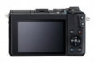
EOS M6
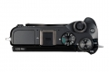
EOS M6
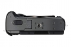
EOS M6
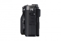
EOS M6
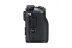
EOS M6
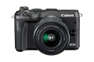
EOS M6
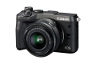
EOS M6
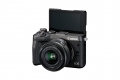
EOS M6
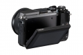
EOS M6
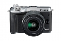
EOS M6
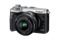
EOS M6
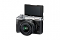
EOS M6
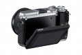
EOS M6
评测 / 相关文章
- 详细内容 （存档）
- 集时尚与性能于一身 佳能EOS M6无反相机评测 （存档）
- ［试用］小机身大能量 EOS M6便携时尚轻体验 （存档）
- ［行情］旅游摄影好帮手 佳能EOS M6相机特价 （存档）
- ［试用］佳能5D4+EOS M6甘南掠影 （存档）
- ［影像］佳能EOS M6清新人像外拍 （存档）
- ［行情］佳能EOS M6国内开始预售 （存档）
- ［试用］佳能EOS M6实拍样张 （存档）
- ［资讯］新一代时尚潮机 佳能EOS M6图赏 （存档）
- ［资讯］CP+2017独家报道 各家新货逐个品（上） （存档）
相关文章
- ［试用］萌系水手服学姐EOS M6微单试用报告 （原站已下线）
- ［试用］携微单游走伊利诺伊州庞蒂亚克小镇 （原站已下线）
- ［试用］小机身大能量 EOS M6便携时尚轻体验 （存档）
- ［行情］旅游摄影好帮手 佳能EOS M6相机特价 （存档）
- ［试用］佳能5D4+EOS M6甘南掠影 （存档）
- ［影像］佳能EOS M6清新人像外拍 （存档）
- ［行情］佳能EOS M6国内开始预售 （存档）
- ［试用］佳能EOS M6无反相机评测 （存档）
- ［试用］佳能EOS M6实拍样张 （存档）
- ［资讯］新一代时尚潮机 佳能EOS M6图赏 （存档）
- ［资讯］CP+2017独家报道 各家新货逐个品（上） （存档）
- ［资讯］佳能发布微型可换镜数码相机新品EOS M6 （存档）
- ［试用］佳能EOS M6轻游大奥匈 （原站已下线）
- ［影像］佳能EOS M6行摄奥匈 （原站已下线）
- ［试用］佳能专业微单EOS M6旅行试用 （原站已下线）
- ［试用］佳能微单M6记录扬州慢时光 （原站已下线）
- ［资讯］佳能推出EOS M6白色版 （存档）